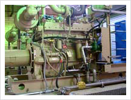

DST has been supplying innovative control and monitoring systems to energy companies since 1980. Much of our experience can be segmented into...
DST has designed and implemented local and remote monitoring and control systems that included equipment status data collection (for maintenance), multi-protocol LANs to link disparate equipment, Life Safety, and remote (microwave) SCADA.
DST remains fully cognizant of the premiums energy companies place on reducing capital equipment costs and system reliability.
Projects include:
- Gas pipeline compressor station controls with HMI, data acquisition, archiving, report generation.
- Gas pipeline compressor unit control retrofit.
- Gas storage field SCADA/PLC system design and engineering for safety systems, injection and extraction wells, odorization and dehydration.
- Development and integration of Hand-held Computer (Palm OS device-based) data collection System for 1 billion cu.ft. LNG storage facility and multiple natural gas compressor stations. The system replaced clipboards, data sheet transcriptions, and keyboard maintenance data entry.
Projects include:
- Process water treatment facility design and automation with PLC / HMI, data acquisition, report generation, and interface to Honeywell TDC 3000.
- Pipe Line System Automation crude oil routing system with PLC & HMI.
- Jet Fuel Delivery (San Francisco & San Jose Airports) with PLC control, emergency shutdown system, and VAX communication for data acquisition.
- Tank Truck Loading Rack Automation for BOL and additive blending using PLC control, serial communication to meters, computer monitoring, report generation, telecommunication to host computer (in, CA, UT, CO, AL).
- Bulk processing and storage of refinery catalyst to include blending, extrusion, drying, metering, and inventory control.
- Marine terminal dock controls for monitoring line tensions, pressures, flow rates, VRU operation, and safety alarms.
Projects include:
- Generator motor controls
- Electrical Substation Automation:
- Protection relay configuration
- Relay line-up
- On-line design
- Load Shedding
- Power analysis
- Protection equipment communication (specialty drivers)
- Protection equipment monitoring and control

|